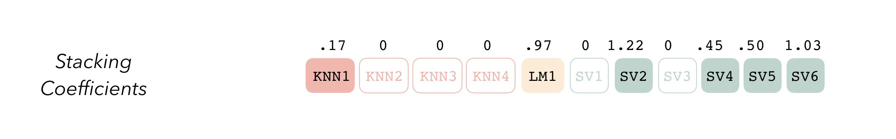

set.seed(10)
mlp_param %>%
grid_random(size = 1000) %>% # 'size' is the number of combinations
summary()
#> hidden_units penalty epochs
#> Min. : 1.00 Min. :0.0000 Min. : 10
#> 1st Qu.: 3.00 1st Qu.:0.0000 1st Qu.: 259
#> Median : 6.00 Median :0.0000 Median : 480
#> Mean : 5.58 Mean :0.0432 Mean : 496
#> 3rd Qu.: 8.00 3rd Qu.:0.0050 3rd Qu.: 738
#> Max. :10.00 Max. :0.9932 Max. :1000rstudio::global tips, tricks, and more
tidymodels
RStudio’s annual conference saw roughly 17,000 attendees for their first global, all-virtual, 24-hour event. I attended several sessions throughout the day and I’ll highlight my favorite data bytes learned that day. I’ll also share relatable content for better modeling with R.
I attended several sessions throughout rstudio::global and below are my favorite reminders, takeaways, and new concepts that I learned. You’ll gain the most from this article if you are comfortable with predictive analytics with R and have been exposed to the tidyverse and tidymodels collections of packages. If you missed the conference, all of the presentations and slides will be made available on RStudio’s website soon. Some philosophical, some technical.

Fostering Positive Thinking
The opening keynote presentation with RStudio’s Chief Data Scientist, Hadley Wickham, was super refreshing and very encouraging to hear. In short, Wickham encouraged analysts and data scientists to change the way you approach challenges when programming or maintaining code.
Below are several reminders that Wickham discussed… If you’re your harshest critic, revisit these. I know that I will:
| Automatic Thoughts | Balanced Alternatives |
|---|---|
| I must be a moron if I can’t perform this “simple” task. | This isn’t something I do very often so it’s unreasonable to expect that I’d automatically be an expert at it. |
| The documentation is useless and doesn’t help me at all. | It’s not possible to document every possible existing situation, but I can still read the docs and learn something. |
| This was a total waste of time. I’ll never get those four hours back again. | Maybe I didn’t succeed in my original goal, but I made some progress, and I gained valuable insights for the next time that I try. |
Tidymodels
What is it?
Coming from a converted caret-ista, it wasn’t an easy transition to the full tidymodels framework. I liked the way caret felt, and I did almost everything with it from resampling, modeling, tuning, to model evaluation. Enter tidymodels, a framework that feels like a deconstructed caret - Each major caret feature has been enhanced and wrapped into its own package. I’ve been using this framework for roughly one year and the rate at which this ecosystem has evolved has been impressive.
tidymodels is a collection of tidy-friendly packages written with a consistent vocabulary for reproducible machine learning workflows. Its core packages include the following:
rsample: provides infrastructure for efficient data splitting and resampling
parsnip: a tidy, unified interface to models that can be used to try a range of models without getting bogged down in the syntactical minutiae of the underlying packages
recipes: a tidy interface to data pre-processing tools for feature engineering
workflows: expands the traditional model-only recipe to a much more holistic blueprint for pre-processing, modeling, post-processing, and evaluation
tune: helps you optimize the hyperparameters of your model and pre-processing steps
yardstick: measures the effectiveness of models using performance metrics
broom: converts the information in common statistical R objects into user-friendly, predictable formats
dials: creates and manages tuning parameters and parameter grids
usemodels: a helpful way to quickly create code snippets to fit models using the tidymodels framework
- At the time of writing this,
usemodelsis still in very early development (version 0.1.0.). This package follows theusethisphilosophy of automating repetitive project development tasks but with a focus on modeling.usemodelshelped me fully transition from thecaretmeta-engine toparsnip+tune+dials+ more of thetidymodelsframework.
- At the time of writing this,
stacks: similar to
usemodels, this is an early-stage package for model stacking, an ensembling method that takes the outputs of many models and combines them to generate a new model that generates predictions informed by each of its members
Irregular Grid Searches
Irregular grid searches help you tune your models by cycling through randomized hyperparameters in an effort to yield the best (or at least better) performance. I’ve been using the dials package to create Latin hypercubes which is explained below, highlighting the benefits of this space-filling design vs a purely randomized irregular grid search. Max Kuhn’s “New in tidymodels” rstudio::global event provided me with a fresh reminder about why these methods are beneficial and how they actually optimize performance.
The documentation below was copied almost entirely from Chapter 13 of Max Kuhn and Julia Silge’s Tidy Modeling with R (“TMWR”). I’ve deleted certain bits and added minimal helper comments in brackets. If you find yourself statistically programming, bootstrapping / resampling, improving model performance through grid searches, maybe even ensemble stacking, I’d highly recommend that you bookmark the TMWR book.
Random Grid Search
There a several options for creating non-regular grids. The first is to use random sampling across the range of parameters. The grid_random() function [of the dials package] generates independent uniform random numbers across the parameter ranges. If the parameter object has an associated transformation (such as we have for penalty), the random numbers are generated on the transformed scale. For example:
For penalty, the random numbers are uniform on the log (base 10) scale but the values in the grid are in the natural units.
The issue with random grids is that, with small-to-medium grids, random values can result in overlapping parameter combinations. Also, the random grid needs to cover the whole parameter space but the likelihood of good coverage increases with the number of grid values. Even for a sample of 15 candidate points, this plot shows some overlap between points for our example multilayer perceptron:
library(ggforce)
set.seed(200)
mlp_param %>%
# The 'original = FALSE' option keeps penalty in log10 units
grid_random(size = 15, original = FALSE) %>%
ggplot(aes(x = .panel_x, y = .panel_y)) +
geom_point() +
geom_blank() +
facet_matrix(vars(hidden_units, penalty, epochs), layer.diag = 2) +
labs(title = "Random design with 15 candidates")
Space-Filling Designs
A much better approach is to use a set of experimental designs called space-filling designs. While different design methods have slightly different goals, they generally find a configuration of points that cover the parameter space with the smallest chance of overlapping or redundant values. See Santner et al. (2003) for an overview of space-filling designs.
The dials package contains functions for Latin hypercube and maximum entropy designs. As with dials::grid_random(), the primary inputs are the number of parameter combinations and a parameter object. Let’s compare the above random design with a Latin hypercube design for 15 candidate parameter values.
set.seed(200)
mlp_param %>%
grid_latin_hypercube(size = 15, original = FALSE) %>%
ggplot(aes(x = .panel_x, y = .panel_y)) +
geom_point() +
geom_blank() +
facet_matrix(vars(hidden_units, penalty, epochs), layer.diag = 2) +
labs(title = "Latin Hypercube design with 15 candidates")While not perfect, this design spaces the points further away from one another.
Space-filling designs can be very effective at representing the parameter space. The default design used by the tune package is the maximum entropy design. These tend to produce grids that cover the candidate space well and drastically increase the chances of finding good results.
To learn more about advanced iterative search methods such as Bayesian optimization and simulated annealing, please visit Chapter 14 of TMWR. Max Kuhn covered these advanced techniques during his tidymodels rstudio::global event and I haven’t had a chance to try these iterative search methods.
usemodels
In the spirit of sharing useful tips, tricks, and packages, I’d like to introduce you to Max Kuhn’s usemodels package. If you’re on the fence about adopting the tidymodels framework, this package is definitely for you. Even for experienced users, usemodels is an excellent way to quickly generate boilerplate code snippets that are algorithm-specific. This package is not yet on CRAN, so install it using the following:
# Installing usemodels from its GitHub repo
devtools::install_github("tidymodels/usemodels")Given a simple formula and a data set, the use_* functions can create code that is appropriate for the data (given the model). [Note: The model formula will be in the form of y ~ a + b + c or y ~ . if you plan on including all available variables in your model.]
For example, using the palmerpenguins data with a glmnet model:
library(usemodels)
library(palmerpenguins)
data(penguins)
use_glmnet(body_mass_g ~ ., data = penguins)
# NOTE: The below will be printed in your console with your model recipe and tailored
# with the required pre-processing steps given your algorithm of choice (in this case,
# glmnet). The `usemodels` output also provides the code structure for a reproducible
# workflow, made possible with the `workflows` package. Should you choose to tune
# your model, `usemodels` also provides code snippets for producing a grid of parameter
# combinations to use with your hyperparameter tuning grid search.
glmnet_recipe <-
recipe(formula = body_mass_g ~ ., data = penguins) %>%
step_novel(all_nominal(), -all_outcomes()) %>%
step_dummy(all_nominal(), -all_outcomes()) %>%
step_zv(all_predictors()) %>%
step_normalize(all_predictors(), -all_nominal())
glmnet_spec <-
linear_reg(penalty = tune(), mixture = tune()) %>%
set_mode("regression") %>%
set_engine("glmnet")
glmnet_workflow <-
workflow() %>%
add_recipe(glmnet_recipe) %>%
add_model(glmnet_spec)
glmnet_grid <- tidyr::crossing(penalty = 10^seq(-6, -1, length.out = 20), mixture = c(0.05,
0.2, 0.4, 0.6, 0.8, 1))
glmnet_tune <-
tune_grid(glmnet_workflow, resamples = stop("add your rsample object"), grid = glmnet_grid)As of today’s date, this package includes templates available with the following code: use_cubist, use_earth, use_glmnet, use_kknn, use_ranger, and use_xgboost
stacks
Ensemble Models
Similar to usemodels, this is a very early-stage package that you should start following. There are already several AI tools for producing “model stacks” or “ensemble models” such as H2O.ai, DataRobot, and a few others, however, stacks is the first purpose-built for use with tidymodels. The following narrative is copied almost directly from the stacks website.
stacks is an R package for model stacking that aligns with the tidymodels. Model stacking is an ensembling method that takes the outputs of many models and combines them to generate a new model - referred to as an ensemble in this package - that generates predictions informed by each of its members.
The process goes something like this:
Define candidate ensemble members using functionality from rsample, parsnip, workflows, recipes, and tune
Initialize a data_stack object with stacks()
Iteratively add candidate ensemble members to the data_stack with add_candidates()
Evaluate how to combine their predictions with blend_predictions()
Fit candidate ensemble members with non-zero stacking coefficients with fit_members()
Predict on new data with predict()
stacks Grammar
At the highest level, ensembles are formed from model definitions. In this package, model definitions are an instance of a minimal workflow, containing a model specification (as defined in the parsnip package) and, optionally, a preprocessor (as defined in the recipes package). Model definitions specify the form of candidate ensemble members.

To be used in the same ensemble, each of these model definitions must share the same resample. This rsample rset object, when paired with the model definitions, can be used to generate the tuning/fitting results objects for the candidate ensemble members with tune.

Candidate members first come together in a data_stack object through the add_candidates() function. Principally, these objects are just tibbles, where the first column gives the true outcome in the assessment set (the portion of the training set used for model validation), and the remaining columns give the predictions from each candidate ensemble member. (When the outcome is numeric, there’s only one column per candidate ensemble member. Classification requires as many columns per candidate as there are levels in the outcome variable.) They also bring along a few extra attributes to keep track of model definitions.

Then, the data stack can be evaluated using blend_predictions() to determine to how best to combine the outputs from each of the candidate members. In the stacking literature, this process is commonly called meta-learning.
The outputs of each member are likely highly correlated. Thus, depending on the degree of regularization you choose, the coefficients for the inputs of (possibly) many of the members will zero out—their predictions will have no influence on the final output, and those terms will thus be thrown out.

These stacking coefficients determine which candidate ensemble members will become ensemble members. Candidates with non-zero stacking coefficients are then fitted on the whole training set, altogether making up a model_stack object.

This model stack object, outputted from fit_members(), is ready to predict on new data! The trained ensemble members are often referred to as base models in the stacking literature. To learn more about how to use stacks, check out the following excellent vignettes from the tidymodels team:
Sources: